同一块岛（种子 101），十个配方。墙是厚短残块，不是 1 格迷宫描线。树是圆切面桩 + 细根。黑坑是空洞；矩形青块是污染。天空巨影 8 帧循环。诊所 / 地铁没有树。这十张是策略锚的样例，不是要搬进游戏的地图。裂隙每次抽一个锚、换种子、在邻域里抖参数再生成；天空影在裂隙里按同一份场改相位循环。
全图里桩是 2×2 圆切面（年轮 + 深色外皮），不是短石墙。下面三张是户外配方的特写。
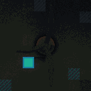
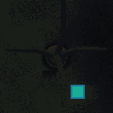
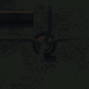
会。同一份氛围场只改 phase，胶囊沿风向滑过岛。雾池是烤死的，这 8 帧只动天空影。裂隙里同一份场：地面烤一次，天空低分辨率叠层循环。
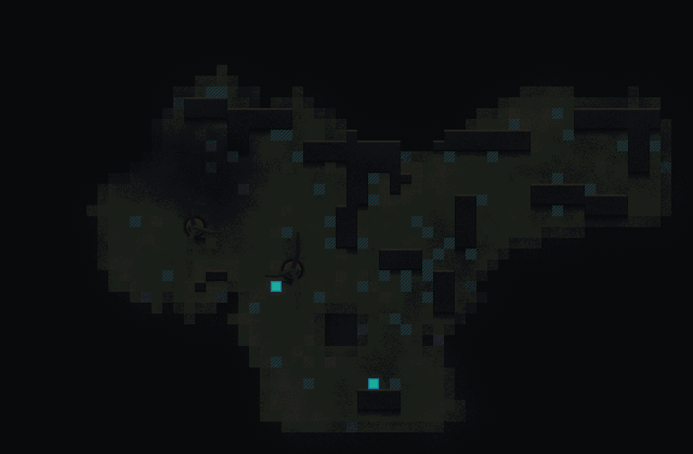
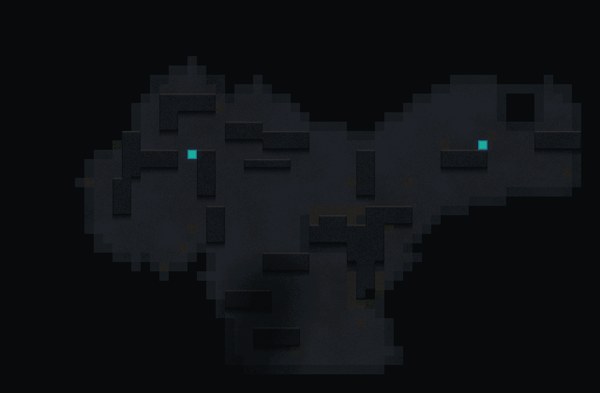
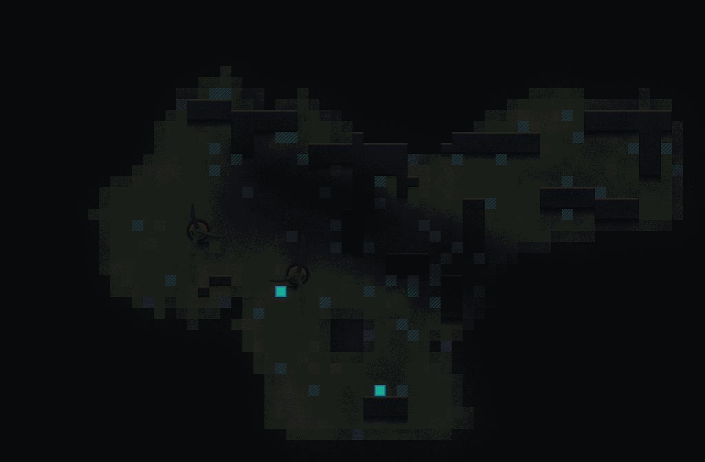
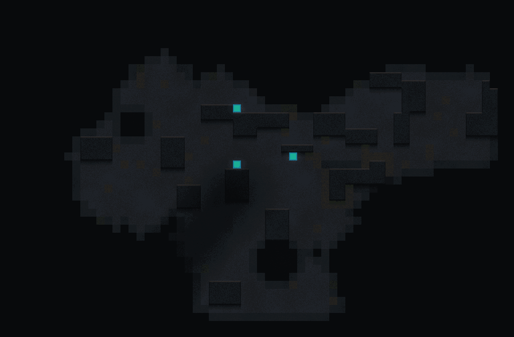
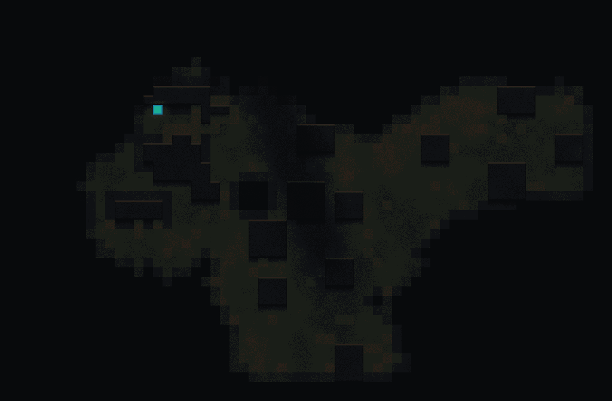
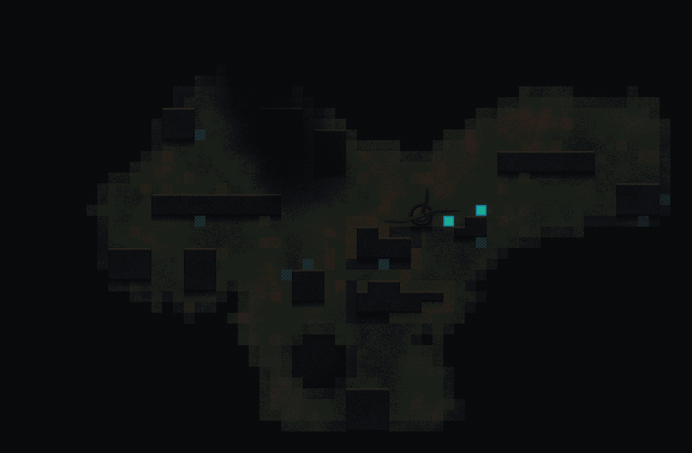
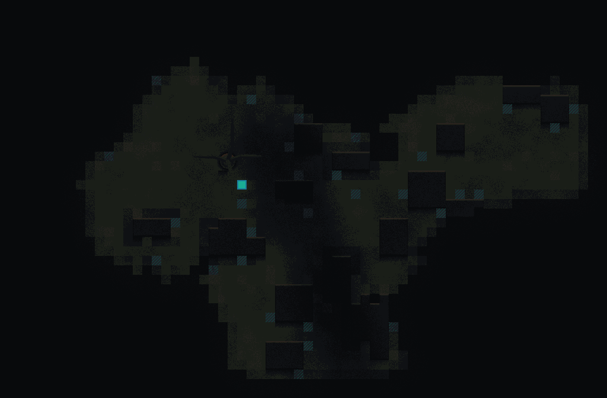
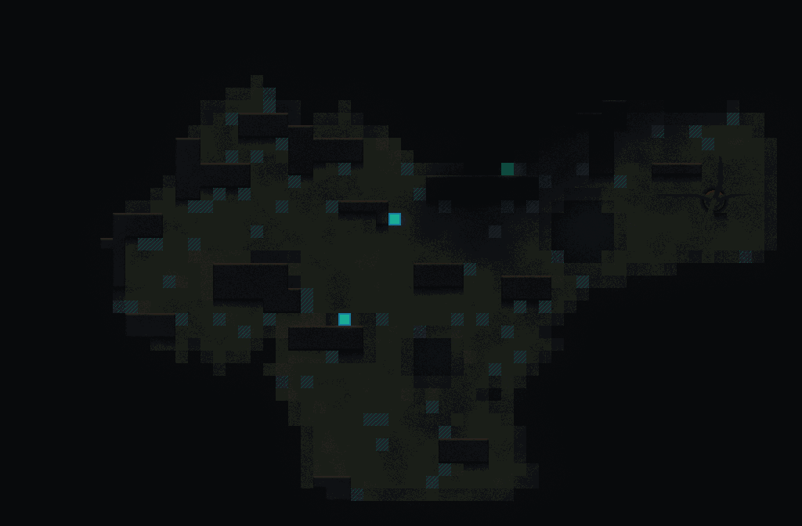
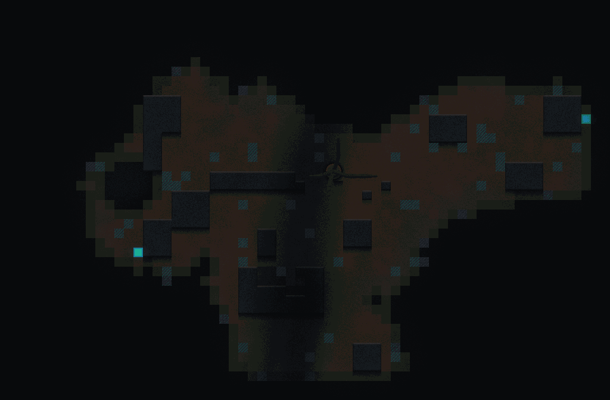
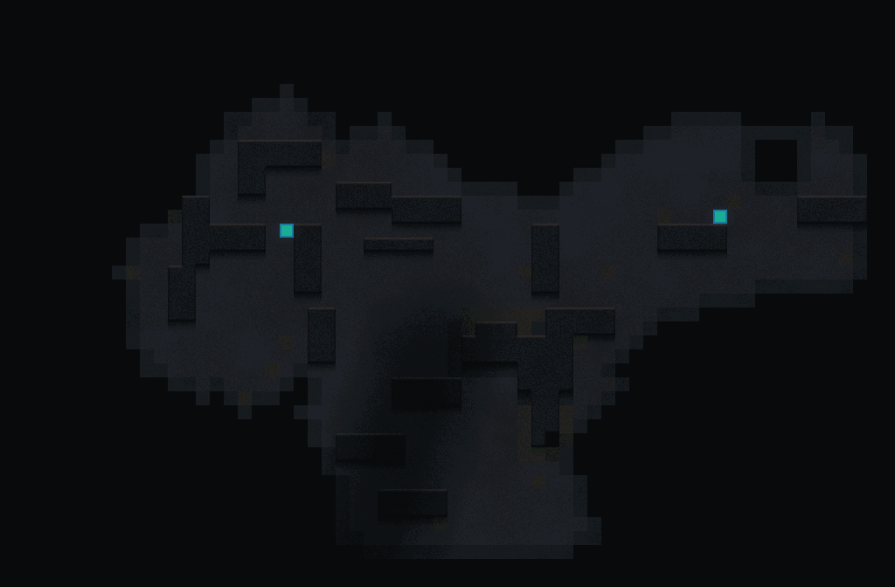
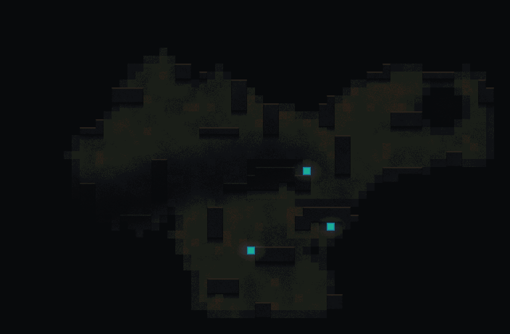
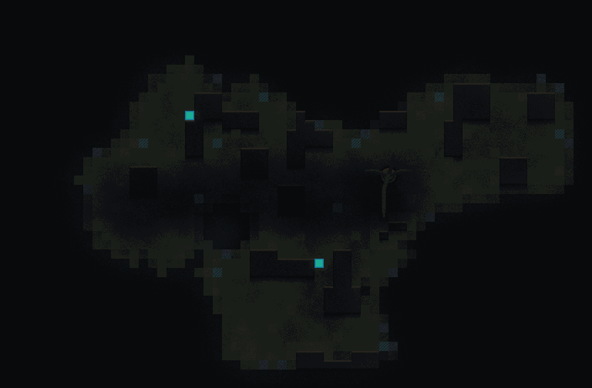